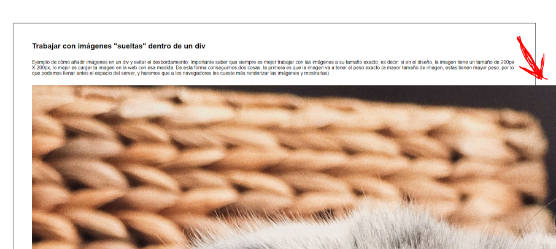
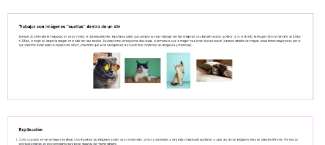
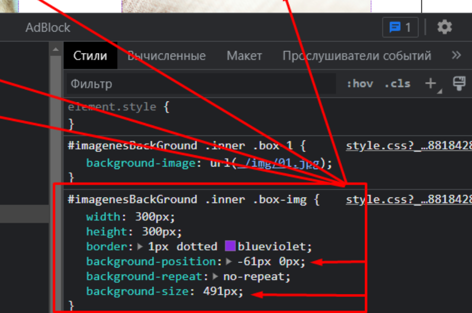

Trabajar con imágenes "sueltas" dentro de un div
Ejemplo de cómo añadir imágenes en un div y evitar el desbordamiento. Importante saber que siempre es mejor trabajar con las imágenes a su tamaño exacto, es decir: si en el diseño, la imagen tiene un tamaño de 200px X 200px, lo mejor es cargar la imagen en la web con esa medida. De esta forma conseguimos dos cosas, la primera es que la imagen va a tener el peso exacto (a mayor tamaño de imagen, estas tienen mayor peso, por lo que podemos llenar antes el espacio del server, y haremos que a los navegadores les cueste más renderizar las imágenes y mostrarlas)
Trabajar con imágenes como background
Ejemplo de cómo añadir las mismas imágenes de las sección anterior, pero como background para evitar que, si estamos trabajando con imágenes de diferentes proporciones, nos permita tener "bloques" del mismo tamaño y un diseño más limpio
Explicación
Nota como cuando refrescas el navegador, pueden aparecer las imágenes grandes por un segundo, y luego se quedan bien. Esto es porque he usado imágenes de mucho peso, para que veas la importancia de usar imágenes bien optimizadas tanto de tamaño como de peso, para evitar esto. Si ya ocurre en local, imagina lo mal que puede ir en un server. Para recortar imágenes puedes usar alguna herramienta online como I Love IMG y para reducir el peso de imágenes puedes usar Tiny PNG
-
Como se puede ver en la imagen de abajo, si no tratamos las imágenes dentro de un contenedor, se van a desbordar, y será más complicado ajustarlas si cada una de las imágenes tiene un tamaño diferente. Por eso se aconseja editarlas en algún programa para poder dejarlas del mismo tamaño.

-
En la imagen de abajo se puede ver que ya está resulto el prblema, pero las imágenes, al tener proporciones diferentes, quedan algunas más altas que otras (esto está hecho con display:grid mirar en CSS las reglas añadidas a #imagenesSueltas )

-
En la imagen de abajo se puede ver que las imágenes tienen todas el mismo tamaño. Para ver este proceso, fíjate en las reglas CSS de #imagenesBackGround. Como extra, si quieres seleccionar qué parte de la imagen quieres mostrar, puedes cambiar los valores de background-position y background-size como se muestra en el ejemplo de abajo. (ahora mismo la regla aplica a las 4 imágenes, así que si queremos ajustar solo una, tener que quitar las reglas de la clase que tienen en común y hacerlo de una en una)
